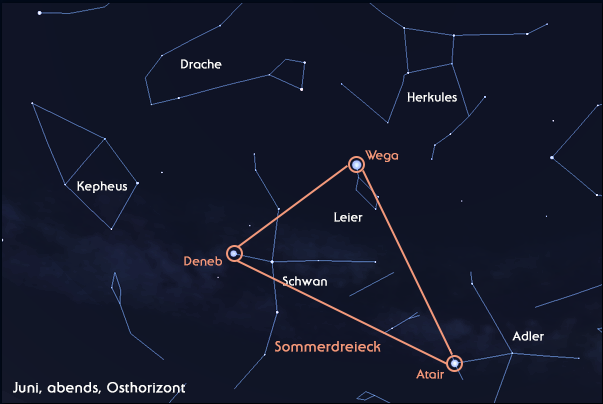
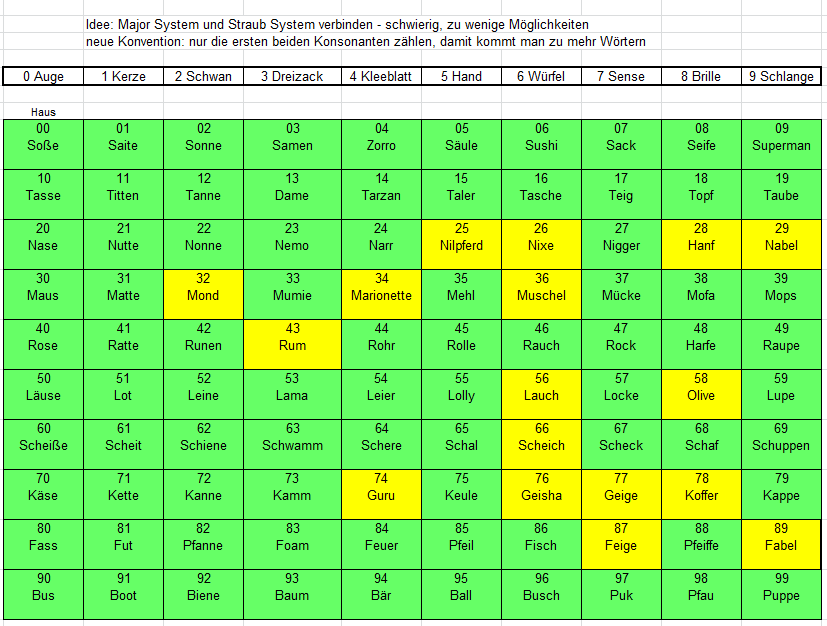
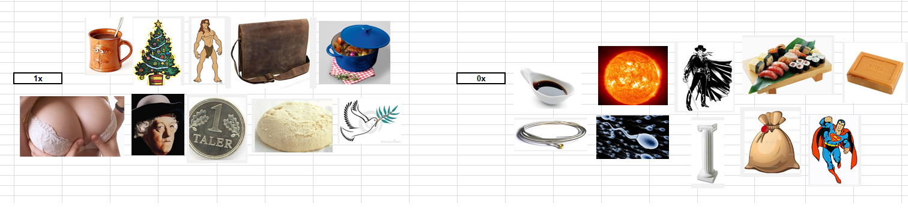
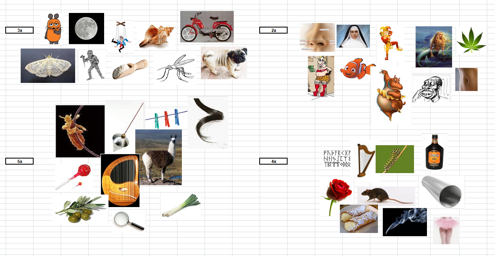
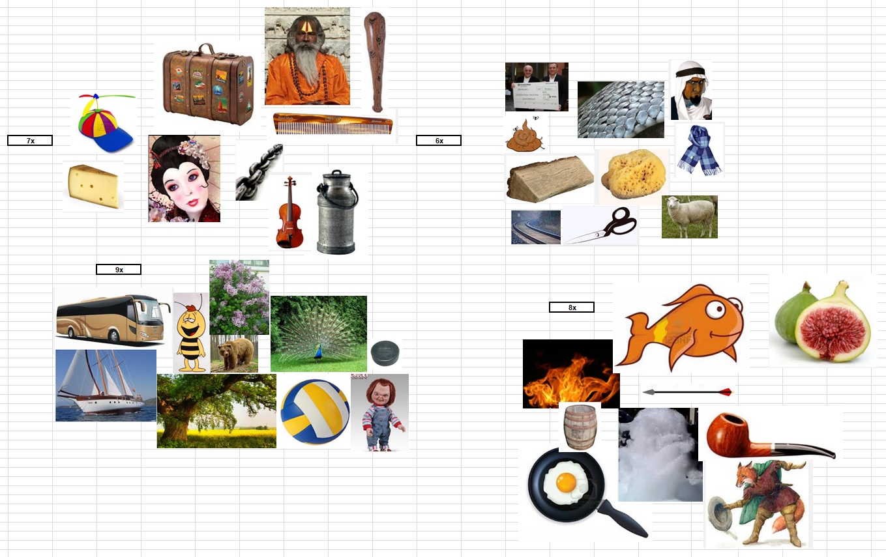
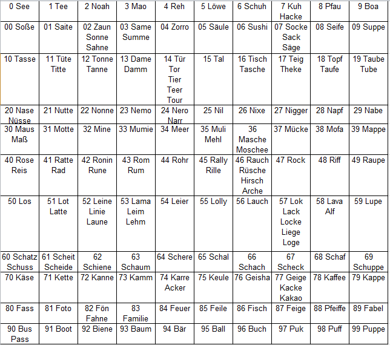

Allgemeine Notizen
Audio
- HIFIMAN EF100 Kopfhörerverstärker
- HIFIMAN MegaMini High-Res Music Player
Bett
Max. Breite: 177 cm Max. Höhe Wandteil: 120 cm Höhe Nachtkastl: 52 cm
lag.at Massivholzbetten
Serie Oak Line
Füsse
- Xylo
- Aero
Kopfteile
- Malta
- Duetto
- Ripo
Bier
Bier abkühlen
DMS in 5 min unter 60"
Stout Chicxulub Brew Age
sehr cremig, Kaffeegeschmack
L4 Wiener Lager Laurentz
Brutto Netto Rechner
Constellations
In July good to see:
- Big Bear
- Dragon
- Swan
- Cassiopia
- Boötes (Bärenhüter) Arcturus
- Virgo (Jungfrau) Spica
- Andromeda Daughter of Cassiopia and Kepheus
Nach aufsteigender Größe geordnete Sterne:
- Sirius
- Sternbild: Großer Hund, Winter
- Entfernung: 8.6 LJ
- Doppelsternensystem (Sirius A, Sirius B)
- Aldebaran
- Sternbild: Stier
- Entfernung: 67
- Rigel
- Sternbild: Orion
- Entfernung: ~700 LJ
- Antares
- Sternbild: Skorpion
- Entfernung: 600 LJ
- Betelgeuse
Sommerdreieck
- Vega
- Deneb
- Altair

Chemistry
- transformation of matter
- The identity of the atoms is preserved under chemical reactions.
- The nucleus of the atoms stays constant due to the strong force holding it together.
- So, only the electron arrangement is changing in chemical reactions (they are the money of chemistry).
- The total number of electrons stays constant.
Galvanic Cell
- Transforms chemical energy into electrical energy.
- Usually consists of 2 electrodes made of different metals in an electrolyte.
Reduction : gaining electrons.
Oxidation : loosing electrons.
Debug Probleme
- expression evaluation doesn't work and hangs up the debugger
- supply via USB is not enough
- chip boots in ROM mode (e.g. short between GPIO_AD_B0_04 and GPIO_AD_B0_05)
- cannot step into inline functions
- SWD pins not connected correctly
Denken
Was ist das? oder besser: Wie geht das?
- Laut oder leise sprechen.
- Mit einem Stift auf einem Papier schreiben oder zeichnen.
Dinge, die man im Kopf machen kann
- Symbole erfinden
Die Kunst des Prokrastinierens
Folgende Punkte sind wichtig:
- Nicht zu etwas sinnlosem zu wechseln.
- Am Ball bleiben, d.h. möglichst alle Aufgaben fertigstellen.
Es sollte vermieden werden Aufgaben anzufangen, die dann unfertig für den Rest der Ewigkeit liegen bleiben.
Man kann einerseits beim Thema bleiben und nur den Modus wechseln. Beispielsweise wechselt man vom Lesen eines Skripts zu einem Video oder man löst ein Beispiel.
Andererseits kann man sich eine Liste von kleinen Aufgaben bereithalten, die erledigt gehören und zu denen man jederzeit wechseln kann. Idealerweise sollten diese Aufgaben dann auch fertiggestellt werden.
Eier kochen
- warmes Wasser von der Leitung
- kalte Eier aus dem Kühlschrank
- Stufe P bis kurz vor dem Kochen
- Stufe 12
- ab dem Kochen 4:45
- abschrecken zum leichteren Schälen
Emacs in Browser
Firma aufsetzen
Telefon & Fax
Voice over IP Auerswald Telefonsystem
Server & Mail & FTP
- Host Europe: Homepage, ftp, incoming mail
Backup RAID
Hi,
we have this RAID 5 system with 4 HDs in the company: https://geizhals.at/synology-diskstation-ds414j-a1095047.html
but for smaller data sizes a system with 2 HDs should be sufficient maybe something like this: http://www.amazon.com/Synology-DiskStation-Diskless-Private-DS214se/dp/B00FWURI8K/ref=sr_1_1?s=pc&ie=UTF8&qid=1451903865&sr=1-1&keywords=synology
Note: HDs are not inculded
As backup software we use: http://www.easeus.com/backup-software/tb-workstation.html
greetings, Joe
Filme
- 2001
- 21 Gramms
- 300
- American Beauty
- American History X
- Asphalt Cowboy
- Avatar
- Apocalypse Now
- Barfly
- Beowulf
- The Best Offer
- Big Fish (2003)
- Cape Fear (1991)
- Carnage
- Cast Away
- Casino
- Catch Me If You Can
- Chocolate
- Clockwork Orange
- Dancer In The Dark
- Das Boot
- Die fabelhafte Welt der Amelie (2001)
- Deliverance
- Dr. Strangelove
- Departed
- Dial M For Murder
- The Exorcist
- Father Of The Bride
- Fight Club
- Forest Gump
- Full Metal Jacket
- Gangs Of New York
- Gatacca
- Gladiator
- The Godfather
- Goldfinger
- Goodfellas (1990)
- The Graduate (1967)
- Groundhog Day
- Hannibal
- Harvey
- Heat (1995)
- Highlander
- I Am Legend
- The Illusionist
- Independence Day
- Indien
- Jackie Brown (1997)
- Leaving Las Vegas
- The Last Unicorn
- León
- Life Of Pi
- The Martian
- Memento
- Midnight In Paris
- The Money Pit
- Mother!
- Mr. Frost
- Mystic River
- The Name Of The Rose
- The Ninth Gate
- No Country For Old Men (2007)
- North By Northwest
- Once Upon A Time In The West
- I Brother where are though
- Papillon
- Payback
- Planes, Trains and Automobiles
- The Pianist
- Predestination
- Pulp Fiction
- Radetzkymarsch
- Raging Bull (1980)
- Rear Window
- Requiem For A Dream
- Road To Perdition
- Ronin (1998)
- The Rope
- Schtonk
- The Secret Window
- The Shankshaw Redemption
- The Shining
- Shutter Island (2010)
- The Silence Of The Lambs
- The Sith Sense
- Sin City
- Singin' in the Rain (1952)
- Shindlers List
- Snatch
- Spring, Summer Fall Winter…and Spring
- Sleepy Hollow
- Stalingrad
- Starship Troopers
- Taxi Driver (1976)
- Terminator 2
- Titanic
- The Trial
- The Untouchables
- U Turn
- Vertigo
- Walle
- War of Roses
- Watchmen
- World War Z
- The Wulf of Wall Street
Gedächtnis
Allgemeines
Man untersuche einmal genau, wie gut verschiedene Memotechniken funktionieren. (LR 2.3)
Also für verschiedene Anwendungen schaut man einfach wie lange es dauert bis man sich eine Information merkt (besser gesagt bis man mit bestimmten Konzepten, Wörtern, was auch immer umgehen kann)
Dann kann man herausfinden was gut funktioniert, was schlecht funktioniert, etc.
Anwendungsfälle:
- einfache Wortlisten freies Spiel mit Anki-Wortlisten
- Vokabeln
- einzelne Ideen
- komplexere Sachverhalte (System von Ideen)
Beispiel: Nanometer IC Kurs
Also verschiedene Techniken untersuchen und bewerten:
1 ohne Tricks, einfach so 2 Karteikartensystem (Anki) 3 Mind Maps 4 Loci Methode 5 Relationen, Querverweistechnik 6 Bildtechnik, Visualisierungstechnik
Grundsätzlich geht es darum Assoziationen zu schaffen.
(Man könnte überhaupt von dem Problem sich Informationen zu merken absehen und allgemein die Frage aufwerfen, wie man Assoziationsnetzwerke baut - einerlei ob mit alten oder neuen Daten. Unser Erinnerungsvermögen umfasst bereits einen Gedächtnispalast. Nur ist dieser nicht mit Absicht, nach einem Plan entworfen.)
Hier erscheint es jedenfalls zweckmäßig neue Informationen (die ja nie gänzlich neu sind) in das Assoziationsgewebe unseres Gedächtnisses einzuflechten. Assoziationen können verschiedener Art sein: räumliche Nähe zeitliche Nähe (?) Kontext Ähnlichkeit (Form, Funktion,…) Ursache und Wirkung Gegenteil Symmetrien
Ordnungsrelationen: Hier kann man sich auf bestehende OR stützen. links rechts oben unten Zahlen Alphabet Im Uhrzeigersinn von Innen nach Außen (oder umgekehrt), kleiner-größer
bekannte Loci-Wege: Wohnung, Arbeit, Supermarkt, Stadt, etc.
Betrachten wir Beispiele:
Darüber hinaus kann man ein Gefühl für Informationen entwickeln. Zum Beispiel habe ich ein spezifisches, wenn auch unbestimmtes Gefühl für die 20er Jahre.
Kontext und Sinn
Assoziationen, die in der Luft hängen sind nur vorübergehend nützlich.
Regeln für das Major System:
(Die Anzahl der Möglichkeiten soll erhöht werden.)
- Nur das erste Wort zählt (?)
- Doppelkonsonanten zählen einfach (?)
Besonders effizient lassen sich Zahlen merken, wenn ein Zusammenspiel aus Kontext und Gegenständen gebildet wird. Der Kontext lässt sich bestimmen: räumlich (Wald, Strand, …) zeitlich (siehe Sheet 'Historisch')
Wie könnten hier noch Verben, Nomen, Adjektive unterschiedlich verwendet werden?
Anmerkungen
Geschichtentechnik Funktioniert über kurze Zeiträume gut. Auf lange Sicht werden die Geschichten dann auch wieder vergessen. Hier hilft wahrscheinlich nur Wiederholung.
Verknüpftechnik Major Code Eselsbrücken Loci Methode Schlüsselwortmethode (Vokabeln) Language Town, Gedächtnispalast
Gedankenspiel Man stelle sich vor, wir würden in einer Gesellschaft leben in der Memotechniken selbstverständlich sind und wie Lesen und Schreiben in der Grundschule oder noch früher gelernt werden. Wie würden diese Techniken in Alltag und Beruf intergriert sein? Auf welche externen Datenspeicher würde eine solche Gesellschaft verzichten? Die Menschen wären sich genausowenig bewusst eine spezielle Technik zu verwenden, wie beim Lesen, Schreiben oder Rechnen.
Ein Problem ist, dass sich die Memotechniken irgendwie fremd und artifiziell anfühlen. Das Ziel müsste sein, dass sie ohne Anstrengung selbstverständlich verwendet werden, ohne dass man sich überhaupt bewusst ist eine spezielle Technik zu verwenden (Ähnlich wie Lesen und Schreiben)
Schachgroßmeister können sich Stellungen erstaunlich gut merken. D.h. es ist möglich das Gedächtnis für bestimmte Arten von Information zu trainieren. Im Unterschied zur Verbesserung des Gedächnisses durch die Verwendung verschiedener Methoden (Gedächtnistricks), kann man das Gedächtnis also auch durch wiederholen der selben Art von Information verbessern.
Welche Rolle spielt hier, wie sinnvoll eine Schachstellung ist? Grundsätzlich gilt, dass man sich sinnvolle Informationen viel leichter merken kann. Aber was ist sinnvoll?
Im Schachbeispiel heißt sinnvoll, dass die Figuren bestimmte Beziehungen miteinander haben.
Gedächtnismodelle
Ultrakurzzeitgedächnis: Sinneswahrnehmungen
Kurzzeitgedächtnis: 7 Einheiten, Gruppierung
Langzeitgedächtnis:
semantische G. episodisches G.
Prinzip des Andockens neuer Information an alte.
Auf-der-Zunge-liegen Phänomen
Analogien: Bibliothek, Archiv Lager Gedächtnispalast
Major System

00 bis 20

30 bis 50

60 bis 99

Alternative

Was gut funktioniert
Passwort - Geschichte mit Anfangsbuchstaben Nummer - auch Anfangsbuchstaben (schwieriger, weil nicht frei wählbar) Körperliste
Anwendungen
Vokabeln
man probiere folgendes: Geschichtentechnik 10 Wörter, die einen inhaltlichen Bezug haben, z.B. Haus, Wohnung, Garten über eine Geschichte verknüpft. Das ist erst mal nur die Liste der Wörter. Die Fremdwörter knüft man dann über lautmalerische Assoziationen an.
Frage: Wieviel Zeit braucht man dafür? (30min)
An die Wörter knüpft man dann assoziativ weitere Wörter an und erhält so ein Wortfeld. So sollte man relativ schnell auf 30-40 Wörter kommen. Dazu kann man sich dann noch Sätze überlegen, in denen diese Wörter verwendet werden.
Komplexere Themen
Eine wichtige Frage ist, ob diese Gedächtnistricks wirklich etwas bringen, wenn man sich mit einem Thema beschäftigt. Das Thema muss entsprechend aufbereitet (z.B. mit Mindmaps, was noch??) und dann abgespeichert werden.
Als Test wären vergangene Themen nützlich. Man müsste sich anschauen, was man vergessen hat und an was man sich noch erinnern kann. Eine Mindmap habe ich z.B. für "Geschichte der Erkenntnistheorie"
Einkaufsliste
Einfach gedanklich in der Küche platzieren.
Namen
Informationen in der Arbeit
Allgemeine Anmerkungen Geschichtentechnik Funktioniert über kurze Zeiträume gut. Auf lange Sicht werden die Geschichten dann auch wieder vergessen. Hier hilft wahrscheinlich nur Wiederholung.
Verknüpftechnik Major Code Eselsbrücken Loci Methode Schlüsselwortmethode (Vokabeln) Language Town, Gedächtnispalast
Gedankenspiel Man stelle sich vor, wir würden in einer Gesellschaft leben in der Memotechniken selbstverständlich sind und wie Lesen und Schreiben in der Grundschule oder noch früher gelernt werden. Wie würden diese Techniken in Alltag und Beruf intergriert sein? Auf welche externen Datenspeicher würde eine solche Gesellschaft verzichten? Die Menschen wären sich genausowenig bewusst eine spezielle Technik zu verwenden, wie beim Lesen, Schreiben oder Rechnen.
Ein Problem ist, dass sich die Memotechniken irgendwie fremd und artifiziell anfühlen. Das Ziel müsste sein, dass sie ohne Anstrengung selbstverständlich verwendet werden, ohne dass man sich überhaupt bewusst ist eine spezielle Technik zu verwenden (Ähnlich wie Lesen und Schreiben)
Beispiele
Geschichtentechnik + Major System:
Regel: (um die Reihenfolge festzulgen) Wörter dürfen nicht doppelt vorkommen.
(Grundproblem bei dem Ganzen: man hat zu wenige Wörter zur Verfügung.)
Wörter: Schuster 6014 Fass 80 Soße 00 Schal 65 Lupe 59 Mumie 33 Sack 07
- Ein Schuster hat ein Fass voll Soße. (6014 80 00)
- In dem Fass schwimmt ein Schal. Der Schuster beobachtet ihn mit einer Lupe. (65 59)
- Plötzlich kriecht ein Mumie aus einem Sack neben dem Fass und greift den (33 07) Schuster an.
Loci Methode + Major System:
Loci Weg: Wohnung
- Beim Schuhkastl steht ein Schuster und repariert Schuhe.
- Im Klo steht ein Fass voll Soße.
- Im Bad hat sich einer mit einem Schal erhängt.
- Im Schalfzimmer bin ich mit einer Lupe hinter Hausstaubmilben her.
- Im Wohnzimmer schmeißt eine dumme Mumie alles mögliche um. Am Ende verkriecht sie sich in ihren Sack.
Wortanfänge, Silbenanfäng
Technik: Man kodiert Zahlen mit Buchstaben und nimmt diese als Wort- oder Silbenanfänge.
launische Würfel (haben die) Zeche am Kamm
Am meisten Möglichkeiten erhält man wenn man Sätze bildet. Wenn die Sätze noch einen Kontext schaffen kann man damit auch die Geschichtentechnik anwenden.
nur der erste Konsonant zählt: Zusammengesetzte Wörter ausgenommen: Kaufzwang = 70
4 Wörter: Lauter nackte Schweine schwitzen. 5266 Saunaschweine kommen mit. 0673 Kur kann dich retten. 7714 Keine nackten Schweine schwitzen. 7266
623 sch n m Schnaps nippen Mäusen.
Gedankenexperiment der vermeintlich gleichen Gegenstände
Man stelle sich zwei Metallwürfel vor, einer ausgefüllt und einer innen hohl. Von außen sehen sie gleich aus.
Gitarrentrallalla
- Endstufe: Harley Benton GPA-400
- Modeller: Line6 Helix Guitar Processor Bundle
Heizung
- Herz Thermostatoberteil HE6365.0.12
- Ventiladapter: von M28 x 1,5 auf M30 x 1,5
Hintergrund
Was ist der Hintergrund (Kontext) wenn man eine Klasse in Java wiederverwendet, verschiebt etc.?
Der Hintergrund ist ein Dateisystem in dem Dateien verschoben, kopiert, etc. werden. Der Hintergrund könnte auch ein System sein in dem Text verschoben oder kopiert wird.
Immer gibt es so einen Hintergrund. Was ist das?
- ein System von Gegenständen, Regeln, Operationen, etc.
Viel hat das zu tun mit objektorientierter Programmierung. Im Prinzip stellt man dabei so ein System her.
Beispiele:
- 2D-Grafik 2D Objekte werden verschoben, rotiert, gezoomt.
Interesting Videos
- Penrose Pattern: https://www.youtube.com/watch?v=48sCx-wBs34
- The Egg: https://www.youtube.com/watch?v=h6fcK_fRYaI
Klimaanlage
- Daikin Perfera - FTXM-N
Klappräder
- Brompton
- Pacific Cycles If Mode
Linux PC
pocket pc open source
Löten
- Eschenbach Brillenaufsatz
Marketing Strategy
Key focus: Get a hight quality GUI in no time.
Whats needed?
- GUI Designer
- Internel Logic (Java)
- Software interface for the host controller
Advertising:
- Video tutorials
- getting started
- complete demo tutorial showing how (and how fast) to get a complete solution Which demo? DBT, ?
Benefits:
- Maintenance: you have the whole system under control without beeing an expert.
- Time to market:
- Long time support:
A Student's Guide to Maxwell's Equations
Notebook Replacement
- Tuxedo Infinity Book
- Convertible
- lenovo yoga c940 (1500 EUR)
- HP Spectre
- HP Elite Dragonfly 8MK81EA - extrem teuer
- Lenovo IdeaPad Flex 5!
- Microsoft Surface Pro 7
- ASUS Zenbook
Pangramme
- The quick brown fox jumps over the lazy dog.
- Franz jagt im komplett verwahrlosten Taxi quer durch Bayern.
- Zwölf Boxkämpfer jagen Viktor quer über den großen Sylter Deich.
Particles
- pointlike, without extension
Measurable properties
- charge
- mass
- spin
- electrons
- protons
- neutrons
- pions
- photons
- quarks
wave functions: probability of having various properties
Quantum Field Theory
- Interprets particles as excited states (quanta) of underlying quantum fields.
- Symmetries allow to predict new particles.
- Interactions between particles can be visualized using Feynman diagrams.
Physical Windows 10 machine to VirtualBox
What you need:
- Disk2vhd
- startwindconverter
- VirtualBox
What you do:
- Create VHDX file with disk2vhd.exe
- Convert VHDX file into VMDK growable with StarWind V2V Converter(installer: starwindconverter.exe)
- Add New VM in VirtualBox and enable EFI in Settings->System
You might have to make changes to your bios to enable virtualization.
Programs, Tools
Windows
AOMEI Partition Assistant
AutoHotkey
Run & Position Programs Shortcuts etc.
Avast Antivirus
free version problems with LME288 link error?
AVG AntiVirus free Edition
Bootice
Master Boot Record (MBR) manipulation.
Cmd Line
Count Lines for all *.cpp files in folder
for %G in (*.cpp) do find /c /v "ölakjdflajdföl" %G
/v display all lines not containing the string /c count of lines containing the string (counts every line that doesn't contain "ölakjdflajdföl")
Display Variable Value
- echo %var% if it doesnt exist response will be: ECHO is OFF
list environment variables:
set
path variable with spaces
store var incl. spaces: SET JDK_HOME=D:/Program Files/Java/jdk1.8.0_25/bin "quote" when using it :
start program
- start /WAIT
- cmd.exe /c ""
ConEmu (Interface for different cmd lines)
Shells are set in Settings:Tasks for Default you have to click on the task
Crystal Dew World
Speed Test for Hard Disks, USB Sticks etc.
Devcon
driver tool
- list installed driver packages
devcon dp_enum
Ditto Clipboard Manager
EaseUS Backup Software
license code: TH1I5-2LFMN-SEHRI-KF8QM-WDUSS
Filezilla
Hotkey Explorer
check Windows Shortcuts
Inno Setup
Installer for Windows Programs
- install Inno Setup Compiler first and then
- add Inno Setup Studio
ImgBurn
Create CD ISO image
ListMessenger Pro
create newsletter
NetTraffic
data transfer
monitor network traffic
Macro Express
- Pause Stop Macro Executeion
Limitations:
- Wnd + d/e etc. is not correctly captured (edit script!)
Multi Commander
Export/import Configuration
Help->Backup/Restore
Screencapture
Camtasia Studio
Space Sniffer
Analyse Disks.
TCC LE (Cmd Line Replace)
UltraMon
Multiple Screens, additional Toolbar on 2nd Screen
USBDeview
Win32DiskImager
WinCDEmu
mount .iso files
WinDirStatPortable
Analyze Disk. Alternative: SpaceSniffer
Windows Tricks
- hidden Windows: Alt+SPACE+m then arrow keys to move window
- turn off Hibernation (del file hiberfil.sys): Admin cmd: powercfg -h off
- pagefile.sys: move to D:/ : Computer->Properties->Advanced system settings->Virtual Memory->Advanced
- WIN+r: dxdiag (DirectX Diagnostic Tool)
- WIN+r: eventvwr.msc (Event Viewer) : power:, power down:
- msconfig.exe startup programs, services etc.
Server PWD
Team Viewer Computer Management -> Local Users and Groups
Windows Startup Programs
autostart open msconfig
Backup
- Acronis
- Paragon
FreeFileSynch
Problems
Bluescreen
- igfx igfxCUIService1.0.0.0 Intel HD Graphics 4600 new graphics driver installed
You may be a victim of software conterfeiting
- windows version not genuine
slmgr -rearm
- RESTART
slmgr -ato
if rearm max nr. : HKEY_LOCAL_MACHINE/SOFTWARE/Microsoft/Windows NT/CurrentVersion/SoftwareProtectionPlatform set skiprearm to 1
Linux
gThumb Pictures
Kdenlive edit Videos
Cross Platform
Master PDF Editor
CopyQ Clipboard Manager
Unetbootin
Create bootable USB Stick.
Development
Advanced USB Port Monitor
monitor USB communication
Atmel Studio
BareTailPro
Real Time Log Window Tool Debug_iLCD_XE.log
BusDog
USB sniffer
Code Warrier
Cygwin
Installation: Install All (click circle)
grep
Searches for lines in files containing a reg-ex PATTERN. With option "-o" only matches are given back.
Options:
-r- search dirs recursively
--exclude-dir- exclude dir(s) –exclude-dir={__history,\.svn,*Save*}
Examples:
Search in .dfm files for WatchAPM in whole Manager project
$ grep -r -I -n --exclude-dir={__history,\.svn,*Save*} --include=*.cpp "AUpdate(" dp/Manager_XE_Joe > dp/Doxygen/ActionUpdateHandlerList.txtfilter for rest of the line after "*"
grep -o \*.* dp/Doxygen/ActionList.txt
find
Searches for files.
List all files in directory recursivley
ls -LR1
Device Monitoring Studio
USB interface debug
Dia (UML-Diagrams)
DLL Export Viewer
Doxygen
Eagle
prints hersstellen: MultiPCB
Eclipse
- LPCXpresso IDE
- GNU ARM Eclipse Plug-ins
Flash Magic
Gerbv
Gerber file viewer
HTerm
uart, serial, RS232
Terminal program for serial communication.
Icon XP
creating Icons
InnoSetup
installer, setup
also see: Inno Script Studio
Keil uVision 4
Netbeans IDE
Installation:
- install Java JDK if not installed yet
- download installer, e.g. 11.2
- install the C++ plugin
- install cygwin: contains g++
Perl
Pixelformer
PowerGrep
Putty
Python
SignTool.exe
Used for code signing. Microsoft: Sign Tool is a command-line tool that digitally signs files, verifies signatures in files, and time-stamps files.
Code Signing Certificate Anbieter
Sourcetrail
analyse source code and browse
SpyEx
check windows messages
Sublime Text 2
Search & Replace
- search & replace in folders & subfolders: strg+shift+f
exclude folder: in Where add: -<FOLDER> (only slash !!) Example:
C:/dp/Manager_XE_Joe/Java IDE/JavaIDEFrame,-*/Tools/*,*.h
Project
Tiny Hexer (hex editor)
TortoiseSVN
Create Repository
How to get the data into the repository?
- Create new folder, then do TortoiseSVN -> Create Repository Here
- Create trunk etc. folders in Repository Browser
- Right Click Folder you want to add.
- SVN Checkout (! this is the important step !)
- yes there is a "this folder is not empty" - message - ignore that
- Add Folder
- Commit
Merge Branches
http://svnbook.red-bean.com/en/1.6/svn.branchmerge.whatis.html
Some general concepts:
- Subversion does not use branches internally, instead it makes copies. When you create a branch a directory is copied, i.e. a branch is actually a copied directory in the repository.
Merging could mean two things:
- Move changed files from branch1 to branch2. Practically replacing files with other versions. So this is best done manually copying the files.
- Combine file changes, so there are two versions (branch1 & branch2) and a third version (combination) is created. This really only works with text.
How to do a "real" merge (see Notes below): We wanna move changes from Firmware_development to Firmware_bugfixes.
FIRST: merge from Firmware_bugfixes to Firmware_development to be up to date. (otherwise you will overwrite changes with older versions).
- Commit you local changes (e.g. to SVN 100) in Firmware_bugfixes (We are in Firmware_bugfixes, this is the branch that is gonna be affected!) (Firmware_development has already been committed.) Don't merge into a modified working copy, you might loose changes when you have to revert.
- Open "Merge…" from the Menu, select Merge two different trees From: Firmware_bugfixes To: Firmware_development (Yes, this is strange! It doesn't make any sense.)
- Commit and check the modifications manually.
Notes:
- "From - To" is exactly the other way round. (try it out with Test Merge!) The files will be copied from TO to FROM !!!
- Merging is always done in the working copy. If you want to merge changes into a branch, you need to have it checked out.
So:
- TO is FROM and FROM is TO
Visual Studio
- VisualGDB with GNU Tools
WireShark
Plug and Unplug Device to find USBCap nr. and Device address.
- Start with the right USBPcap.
- filter for the right device:
usb.device_address==5
USB live Capture (Windows) C:/Program Files/USBPcap/ USBPcapCMD.exe -d //./USBPcap2 -o - | "C:/Program Files/Wireshark/Wireshark.exe" -k -i
Office, Multimedia, etc.
Excel
- Sum of hh:mm: if > 24h Excel shows modulo 24, to prevent this: [hh]:mm
- convert 0,5 to 0:30: =TEXT(0,5/24;"h:mm")
- convert 0:30 to 0,5: A1/24 (A1 has format hh:mm)
- Add Button to QuickStart Toolbar: Symbolleiste anpassen -> Weitere Befehle -> Befehle auswählen:Makros …
VBA
- Runtime Error is not shown when a function (e.g. Public Function MySub()) is called from a cell.
Handbrake DVD Ripper
Media Monkey
CD-Rip: nach 30 Tagen: lame_enc.dll (aus dem Internet) in den Programmfolder kopieren.
Open Broadcaster
Screencast Software
Precision Helper
Tool for creating and managing help projects. It focuses on the organization of existing html files, xml files, scripts, images and other resources.
PaletteHome
Raumplanung, 3D
C:\Users\jh\AppData\Local\Google\Chrome\User Data\Profile 1\IndexedDB C:\Users\jh\AppData\Local\Google\Chrome\User Data\Safe Browsing
Recuva
Recover deleted Data
Skype
Pwd: Ch…
Team Viewer
purchase@demmel.com pwd: max…
Thunderbird
Video to Video Converter
Drawing, CAD
FreeCAD
Adobe Illustrator
Adobe Photoshop
Corel Paint Shop Pro
Corel Draw
graphviz
ditaa
Encryption
- KeePass
- VeraCrypt Create encrypted file container.
Qigong
Die 8 Brokate
- Den Himmel mit den Händen stützen.
- Den Bogen spannen.
- Die Hände einzeln heben.
- Hinter sich schauen.
- Links und rechts schauen.
- Die Füße greifen.
- Die Fäuste ballen.
- Die Fersen heben und fallen lassen.
Rechentricks
Multiplikation
- Vedic Methode 69x38 = 6x3 | 6x8+9x3 | 9x8 = 18 | 75 | 72 = 2622
Spezialfälle
- 10er Stellen gleich, 1er Stellen addiert = 10 28 x 22 = (2x3) | 8x2 = 616
Serien
- Better Call Saul
- The Big Bang Theory
- Breaking Bad
- The Fall
- Fawlty Towers
- Fargo
- Game Of Thrones
- Hannibal
- The Wire
- True Detective
- Twin Peaks
- Silicon Valley
- Young Sheldon
Sessel
- Sessel Garbo
- Ikea Ekenäset
- Lehman Lounge Chair
- Relaxsessel Macumba
Sprachsteuerung
- Mycroft
Star Trek - Good Episodes
The Next Generation
Season 2:
- E09: The Measure of a Man (!)
- E13: Time Squared
- E15: Pen Pals
Season 3:
- E16: The Offspring
- E26: The Best of Both Worlds Part 1
Season 4:
- E01: The Best of Both Worlds Part 2
- E02: Family
- E21: The Drumhead
Season 5:
- E02: Darmok
- E13: The Masterpiece Society
The Enterpise saves a genetically engineered and perfectly balanced society. But it might also have been the beginning of it's destruction. - E23: I, Borg
- E24: The Next Phase
- E25: The Inner Light (!)
Season 6:
- E04: Relics "Dyson sphere"
E10 & E11: Chain of Command
"There are four lights!"
Picard is called on a secret mission, get's caught by the Cardassians and is tortured meanwhile the Enterprise is commanded by the questionable Captain Jellico.
- E12: Ship in a Bottle
Season 7:
- E16: Thine Own Self
Deep Space Nine
Season 7:
- 14 Chimera
Staubsaugerroboter
- Roborock S6MaxV
- Ecovacs Deebot T8 AIVI
Symbol Language
Goals:
- induitive
- easy to remember, passively
- can be drawn by hand
Syntax
- Main Symbol + Indicator + Modifier
- Additional Symbols
- Additional symbols might also have additional symbols (e.g. action + tense).
- Indicator: action, property (e.g. blue, red, etc.), object, plural
- Mode: Assertion, Question(?), Directive (imperative)(!), Commission (promises), Expression (Thank You, etc.), Declaration
- Modifier: negation (opposition), bigger, smaller, faster, etc.
Indicator
- Action:
Translation from N
- Take a word and translate it into a description.
- Use Symbols for the elements in the description.
Questions
- ontological categories?
Unable to restore file due to long file name
- Right click -> Properties -> Previous Versions -> Open
- Right click on any file or folder within the previous folder and chose Properties.
On the General tab copy what's shown in 'location', e.g.:
\\localhost\D$\@GMT-2011.09.20-06.00.04\_Data - cmd.exe:
subst X: \\localhost\D$\@GMT-2011.09.20-06.00.04\_Data robocopy X: D:\Destination\ /E /COPYALL- When finished:
subst X: /D
Virtualbox on USB
What do we dream of?
- Linux on USB Stick, persistent live system, so we can store information on the USB Stick
- together with a 2nd Data partition, so the usb stick can be used normally too
- bootable from windows (via portable VirtualBox)
- bootable at PC boot
Create a Virtual Machine containing the USB Stick
- Create a bootable USB stick.
- Start Disk Management to get Disk Nr. (from
diskmgmt.msc), e.g. you get 1 as answer. - Run
cmd.exeas Administrator and create a Virtual disk on the Desktop:
cd %programfiles%\oracle\virtualbox "VBoxManage.exe" internalcommands createrawvmdk -filename "%USERPROFILE%"\Desktop\usbdrive.vmdk -rawdisk \\.\PhysicalDrive1
usbdrive.vmdkis now on your Desktop.- Run
start virtualbox(in Admin cmd) and create a new VM withusbdrive.vmdkas existing disk. - You can now run the system on the USB stick in the VM.
Notes:
- Windows 7 can only handle the first partition on a USB-stick.
- This method can also be used to install an OS from USB Stick.
Visual Studio Code for Embedded
- Elixir Cross Referencer
Vogelperspektive
The language Kuuk Thaayorre spoken by some 200 people in Pormpuraaw Australia has 16 words for absolute directions instead of relative ones like left, ahead, etc.
https://www.edge.org/conversation/how-does-our-language-shape-the-way-we-think
This allows them to have a map of the area they inhabit in their mind at any time, a birds eye view.
We should have a similar birds eye view when coding.
Wie managt man das Unbewusste?
Beobachtung:
- Man hat vage die richtige Idee, aber nicht voll bewusst.
Frage:
- Wie macht man das Unbewusste konkret?
Yubico
Does YubiKey 5 Security Key work with?
- KeepassXC - YES
- Android: Keypass2Android - App (NFC)
- Google - YES
- Amazon - NO, only mobile phone
- Linux login, root - YES
- SSH - YES
- VeraCrypt, ?
Linux Login
Install on Linux:
sudo apt install libpam-u2f
Create local keys for each user
mkdir -p ~/.config/Yubico pamu2fcfg > ~/.config/Yubico/u2f_keys
For additional Yubikeys (-n - append)
pamu2fcfg -n
add the output at the end of (separator is ":")
~/.config/Yubico/u2f_keys
Same for root
su mkdir /root/.config/Yubico
etc.
Sudo Login Edit
sudo vim /etc/pam.d/sudo
insert below @include common-auth
auth required pam_u2f.so interactive
su login
sudo vim /etc/pam.d/su
same as above
WebAuthn
- Public-key authentication
- Private key is stored on the YubiKey.
U2F (Universal 2nd Factor)
- open standard
- User name + password + key
OATH (Initiative for Open Authentication)
2 Standards:
- TOTP : 6-8 digit code valid for 30 seconds (generated using HMAC).
- HOTP : like TOTP but using a counter instead of a timestamp.
The YubiKey spits out a HTOP code when the button is pressed (needs to be configured).
PGP (Pretty Good Privacy)
- OpenPGP standard
- RSA or ECC sign/encrypt operations using a private key.
- Typically used through GnuPG.
Application:
- email encryption
- SSH
- PAM (Pluggable Authentication Module) Authentication (e.g. used for SSH)
PIV (Personal Identity Verification)
- RSA or ECC sign/encrypt operations using a private key.
OTP
If you press the button the YubiKey spits out a 44-character One Time Password. These OTPs can be verified by the YoubiCloud web service.
- first 12 characters represent the Public ID of the YubiKey.
- remaining 32 characters are the unique passcode.
- an internal counter allows for checking if a OTP has already been used.
SSH
Set up SSH for authentication with public/private key
- The public key is stored on the server.
It is stored in
~/.ssh/authorized_keys.
Create Public/Private Key Pair (on the Client)
ssh-keygen
Copy Public Key to your server
ssh-copy-id odroid@joesanmarzano.duckdns.org
Method 0
https://www.youtube.com/watch?v=pfVhAtJt5_o
On the ssh-server:
sudo apt-add-repository ppa:yubico/stable sudo apt update sudo apt install libpam-yubico
Create file authorized_yubikeys
sudo vim /etc/ssh/authorized_yubikeys
Enter:
odroid:...first 12 chars when you press the yubikey button
sudo vim /etc/pam.d/sshd
add
auth required pam_yubico.so id=<Client ID> key=<Secret Key> authfile=/etc/ssh/authorized_yubikeys
Get Client ID and Secret Key from: https://upgrade.yubico.com/getapikey/
Example:
Client ID: 12345 Secret Key: 29384=hr2wCsdl+fi4tj4o3i
paste it into the above line
Change:
sudo /etc/pam.d/sshd_config ChallengeResponseAuthentication yes UsePam yes
sudo service ssh restart
Method 1 GnuPG
https://gist.github.com/artizirk/d09ce3570021b0f65469cb450bee5e29
GnuPG only needs the CCID (Chip Card Interface Device) protocol. The YubiKey will emulate a Smartcard Reader.
Install YubiKey Manager (ykman)
sudo apt-add-repository ppa:yubico/stable sudo apt update sudo apt install yubikey-manager
Install gnupg, pcscd and scdaemon
sudo apt install gnupg pcscd scdaemon
Method 2
https://monicalent.com/blog/2017/12/16/ssh-via-yubikeys-ubuntu/
Get Client ID and Secret Key from: https://upgrade.yubico.com/getapikey/
Example:
Client ID: 12345 Secret Key: 29384=hr2wCsdl+fi4tj4o3i
Update pam settings to use YubiKey
sudo vim /etc/pam.d/sshd
enter:
auth required pam_yubico.so id=[Your Client ID] key=[Your Secret Key] debug authfile=/etc/yubikey_mappings mode=client
Create the file /etc/youbikey_mappings and insert the YubiKeys OTP (first 12 characters).
odroid:jdlrkfosndhf
Configure SSH
sudo vim /etc/ssh/sshd_config
Make sure to set this
ChallengeResponseAuthentication yes AuthenticationMethods publickey,keyboard-interactive:pam UsePAM yes PubkeyAuthentication yes AuthorizedKeysFile %h/.ssh/authorized_keys
If you want to turn off password authentication
PasswordAuthentication no
Restart sshd
service sshd restart